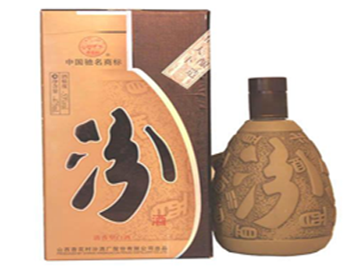

黄河中游地区饮食文化区大致包括陕西、山西、河南等地。地理气候特征是黄土高原为 主体；暖温带；半湿润半干旱区。
黄河中游地区的饮食特点，一是以小麦、玉米等旱粮为主食，属于五谷杂粮并食区；猪、 羊、鸡等为主要动物食品。
饮食讲实惠、朴实无华、味厚油大色重，面点小吃久负盛名。
黄河中游地区饮食口味特点是酸辣，味稍重。
黄河中游地区饮食文化区大致包括陕西、山西、河南等地。地理气候特征是黄土高原为 主体；暖温带；半湿润半干旱区。
黄河中游地区的饮食特点，一是以小麦、玉米等旱粮为主食，属于五谷杂粮并食区；猪、 羊、鸡等为主要动物食品。
饮食讲实惠、朴实无华、味厚油大色重，面点小吃久负盛名。
黄河中游地区饮食口味特点是酸辣，味稍重。
肉夹馍是陕西名食。
河南烩面是河南特色美食，有着悠久的历史。烩面按配料不同可分为羊肉烩面，牛肉烩 面，三鲜烩面，五鲜烩面等等。
山西老陈醋是中国四大名醋之一。
汾酒是我国清香型白酒的典型代表，源远流长，素以入口绵、落口甜、饮后余香、回味 悠长而著称。